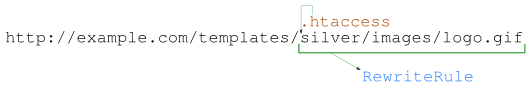
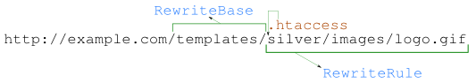

Как на самом деле работает mod_rewrite. Пособие для продолжающих
Эта статья выросла из идеи продвинутого обучения наших сотрудников технической поддержки работе с mod_rewrite. Практика показала, что после изучения имеющихся в большом количестве учебников на русском языке саппортам хорошо дается решение шаблонных задач, но вот самостоятельное составление правил происходит методом проб и большого количества ошибок. Проблема заключается в том, что для хорошего понимания работы mod_rewrite требуется изучение оригинальной англоязычной документации, после чего — либо дополнительные разъяснения, либо часы экспериментов с RewriteLog.
В статье изложен механизм работы mod_rewrite. Понимание принципов его работы позволяет четко осознавать действие каждой директивы и ясно представлять себе, что происходит в тот или иной момент внутри mod_rewrite при обработке директив.
Я предполагаю, что читатель уже знаком с тем, что такое mod_rewrite, и не буду описывать его основы, которые легко найти в интернете. Также нужно отметить, что в статье освещается работа mod_rewrite при использовании его директив в файле .htaccess. Отличия при работе в контексте <VirtualHost> изложены в конце статьи.
Итак, вы изучили mod_rewrite, составили несколько RewriteRule и успели столкнуться с бесконечными перенаправлениями, со случаем, когда правило почему-то не ловит ваш запрос, а также с непредсказуемой работой группы правил, когда последующее правило неожиданно изменяет запрос, кропотливо подготовленный правилами предыдущими.
Почему так происходит?
С чем работает RewriteRule
Первому RewriteRule передается путь от того места, где находится .htaccess, до запрошенного файла. Эта строка никогда не начинается со "/". Последующим RewriteRule передается результат предыдущих преобразований.
Чтобы досконально понять, как работает RewriteRule, необходимо сначала определить, с чем он работает. Рассмотрим, как Apache получает строку, которая изначально передается на обработку RewriteRule в .htaccess.
Когда только начинаешь работать с mod_rewrite, логично предполагаешь, что он работает со ссылками. Однако в случае с использованием mod_rewrite в .htaccess это не так. На самом деле в RewriteRule передается не ссылка, а путь до запрошенного файла.
Из-за внутренней архитектуры Apache в тот момент, когда в действие вступает .htaccess, mod_rewrite может оперировать только с путем до файла, который должен быть обработан. Это связано с тем, что до передачи в mod_rewrite запрос уже могли изменить другие модули (например, mod_alias), и итоговый путь до файла на сайте уже может не совпадать с исходной ссылкой. Если бы mod_rewrite работал с исходной ссылкой, он бы нарушал действие модулей, которые изменили запрос до него.
Поэтому в mod_rewrite передается абсолютный путь до файла, который должен быть обработан. Также mod_rewrite знает путь до .htaccess, в котором размещены правила RewriteRule. Чтобы сделать из пути до файла что-то похожее на ссылку, с которой планирует работать разработчик сайта, mod_rewrite отрезает от абсолютного пути часть до файла .htaccess.
Так вот, именно этот путь, от которого отрезан путь до .htaccess, передается в первый RewriteRule. Например:

Путь до .htaccess отрезается вместе со слешем. Из этого есть следствие: строка, которая изначально передается на обработку RewriteRule никогда не начинается со "/".
Важно запомнить, что не делает RewriteRule. Она не обрабатывает имя сайта, аргументы, которые переданы в скрипт, да и ссылку обрабатывает не всю, если .htaccess размещен не в корне сайта. Всем этим занимается RewriteCond, которого кратко коснемся чуть позже. Итак:
# работать не будет - правило начинается со / RewriteRule ^/index.php$ /my-index.php # работать не будет - название сайта не анализируется RewriteRule RewriteRule ^example.com/.* http:<span>//www.</span>example.com # работать не будет - аргументы ссылки не попадают в RewriteRule RewriteRule index.php\?newspage=([0-9]+) news.php?page=$1 # Будет работать только если .htaccess находится там же, где находится папка templates, # например, в корне сайта. То есть, если .htaccess находится в templates/.htaccess , правило # работать НЕ БУДЕТ, потому что mod_rewrite отрежет путь до .htaccess и на вход RewriteRule # строка попадет уже без "templates/" RewriteRule ^templates/common/yandex-money.gif$ templates/shared/yad.gif
В начале использования mod_rewrite я рекомендую работать с ним только в .htaccess в корне сайта. Это несколько упростит контроль за его работой.
С чем работает RewriteRule, мы разобрались. Теперь посмотрим, как он работает.
Как работает RewriteRule
RewriteRule просто преобразовывает строку в соответствии с регулярными выражениями, и все. RewriteRule работает со строкой, а не со ссылкой или путем до файла.
Как мы выяснили выше, на вход RewriteRule попадает путь от .htaccess до запрошенного файла. Удобнее всего теперь абстрагироваться от путей и ссылок и рассматривать то, с чем работает RewriteRule, как обычную строку. Эта строка передается от RewriteRule к RewriteRule, видоизменяясь, если какое-то из RewriteRule сработало.
В общем виде, если исключить сложности с использованием флагов (некоторые из которых мы рассмотрим ниже) и сложности с составлением регулярных выражений (которых мы почти не будем касаться в этой статье), RewriteRule работает ОЧЕНЬ просто.
Вот, в общем, и все. Чтобы наглядно проиллюстрировать, что RewriteRule работает именно со строкой, рассмотрим следующий фантастический пример:
# <b>Запрос: http:<span>//mysite</span>.com/info.html</b> # В первый RewriteRule попадет "info.html" # Преобразовываем запрос в произвольную строку. RewriteRule ^info.html$ "I saw a turtle in the hole. And it was dancing rock-n-roll. And it was smiling. All in all, it was a very funny doll." # "info.html" -> "I saw a turtle..." # Заменяем эту строку на внешнюю ссылку. RewriteRule turtle https:<span>//example</span>.com/information/index.html # "I saw a turtle..." -> "https:<span>//example</span>.com/information/index.html" # Заменяем имя сайта! RewriteRule ^(.*)example.com(.*)$ $1example.org$2 # "https://example.com/information/index.html" -> "https:<span>//example</span>.org/information/index.html" # Заменяем протокол! RewriteRule ^https:(.*)$ ftp:$1 # "https:<span>//example</span>.org/information/index.html" -> "ftp:<span>//example</span>.org/information/index.html" # Заменяем конечную ссылку. RewriteRule ^(.*)/index.html$ $1/main.php # "ftp:<span>//example</span>.org/information/index.html" -> "ftp:<span>//example</span>.org/information/main.php"
Как видите, RewriteRule все равно, с чем работать — она просто преобразовывает строку в соответствии с заданными ей аргументами. Если хотите, можете в строке хранить любые массивы данных, при желании, настойчивости и хорошем знании регулярных выражений можете хоть крестики-нолики на RewriteRule написать.
Здесь нужно сделать замечание: хоть RewriteRule и работает с чистой строкой, она все-таки ориентирована на работу со ссылками. Поэтому она будет по-особому реагировать на строки, начинающиеся на «https://» или аналоги (запомнит, что мы хотели сделать внешний редирект) и на символ "?" (посчитает следующие символы аргументами, которые нужно будет подставить к запросу). Однако сейчас нас это не интересует — важно понять, что в RewriteRule нет никакой магии — она просто берет строку и изменяет ее так, как вы ей сказали. Внешние редиректы и аргументы мы рассмотрим позже в статье, там тоже есть, о чем поговорить.
После того как все преобразования произведены и выполнено последнее RewriteRule, вступает в силу RewriteBase.
Для чего нужен RewriteBase
Если получившийся после преобразований запрос является относительным и отличается от исходного, RewriteBase добавит себя к нему слева. Нужно обязательно указывать RewriteBase в .htaccess. Его значение — путь от корня сайта до .htaccess.
RewriteBase выполняется только после всех RewriteRule, а не между ними.
Мы уже говорили выше о том, что в mod_rewrite, работающий в .htaccess, попадает абсолютный путь до запрошенного файла. Чтобы передать его в RewriteRule, mod_rewrite отрезает путь до .htaccess. Потом правила RewriteRule одно за одним последовательно изменяют запрос. И вот после того, как запрос изменен, Apache должен восстановить абсолютный путь до файла, который он должен в итоге обработать. RewriteBase фактически является хаком, который помогает восстановить исходный путь до файла.
RewriteBase выполняется после всех преобразований. Это значит, что он не будет изменять запрос между RewriteRule, а вступит в силу только когда все RewriteRule отработают.
После всех преобразований RewriteBase смотрит, относительный получился в итоге путь или абсолютный. В контексте Apache имеется в виду относительный или абсолютный путь, отсчитывая от корня сайта:
Если путь абсолютный, RewriteBase ничего не делает. А если относительный — RewriteBase дописывает себя слева. Это работает как для внутренних, так и для внешних редиректов:
# .htaccess находится в /images/ # RewriteBase указан /images/ RewriteBase /images/ # <b>Запрос http:<span>//example.</span>com/images/logo.gif</b> # На вход RewriteRule попадает "logo.gif" RewriteRule ^logo.gif$ logo-orange.gif # После RewriteRule: "logo.gif" -> "logo-orange.gif" # После RewriteBase: "logo-orange.gif" -> "/images/logo-orange.gif" # <b>Запрос http:<span>//example.</span>com/images/header.png</b> # На вход RewriteRule попадает "header.png" RewriteRule ^header.png$ /templates/rebranding/header.png # После RewriteRule: "header.png" -> "/templates/rebranding/header.png" # После RewriteBase: ничего не меняется, так итоговый результат преобразований начинается со "/'. # <b>Запрос http:<span>//example.</span>com/images/director.tiff</b> # На вход RewriteRule попадает "director.tiff" # Используем <em>внешний относительный</em> редирект RewriteRule ^director.tiff$ staff/manager/director.tiff [R=301] # После RewriteRule: "director.tiff" -> "staff/manager/director.tiff" # + mod_rewrite запомнил, что будет внешний редирект # После RewriteBase: "staff/manager/director.tiff" -> "/images/staff/manager/director.tiff" # mod_rewrite вспомнил про внешний редирект: # "/images/staff/manager/director.tiff" -> http:<span>//example.</span>com/images/staff/manager/director.tiff
Обычно после некоторого знакомства с mod_rewrite складывается следующая привычка: 1) в каждый .htaccess добавлять «RewriteBase /», 2) все перенаправления начинать со слеша: «RewriteRule news.php /index.php?act=news». Это помогает избавиться от артефактов работы RewriteBase, но так делать неправильно. Теперь, когда нам известно, что делает RewriteBase, можно сформулировать следующие корректные правила:

Что будет, если не указать RewriteBase? По умолчанию Apache делает его равным абсолютному пути на файловой системе до .htaccess (например, /var/www/example.com/templates/). Некорректность такого предположения Apache проявляется на внешних относительных редиректах:
# Запрос http://example.com/index.php
# DocumentRoot: /var/www/example.com/
# .htaccess находится в корне сайта, и в нем НЕ УКАЗАН RewriteBase.
# Поэтому по умолчанию RewriteBase равен абсолютному пути до .htaccess: /var/www/example.com/
# На входе RewriteRule - "index.php" RewriteRule ^index.php main.php [R]
# На выходе: "index.php" -> "main.php"
# mod_rewrite запомнил, что нужен внешний редирект
# Закончились RewriteRule
# mod_rewrite все равно выполняет RewriteBase, так как у него есть значение по умолчанию.
# Получается: "main.php" -> "/var/www/example.com/main.php"
# Здесь mod_rewrite вспоминает, что был внешний редирект:
# "/var/www/example.com/main.php" -> http:<span>//example.</span>com/var/www/example.com/main.php
# Получилось совсем не то, что имели в виду.
Итак, запрос прошел через все RewriteRule, после чего к нему, в случае необходимости, добавился RewriteBase. Должен ли теперь Apache отдать файл, на который показывает результирующий путь? Нет. Теперь получившийся запрос будет обрабатываться еще раз.
Как работает mod_rewrite. Флаг [L]
mod_rewrite запускает обработку запроса снова и снова, до тех пор, пока он не перестанет меняться. И флаг [L] не может это остановить.
При составлении более-менее сложных конфигураций mod_rewrite важно понимать, что изменение запроса не заканчивается на последнем RewriteRule. После того, как сработало последнее правило RewriteRule и был добавлен RewriteBase, mod_rewrite смотрит, изменился запрос или нет. Если запрос изменился, его обработка начинается заново с начала .htaccess.
Apache поступает так, потому что в процессе изменения запроса он мог быть перенаправлен в другую директорию. В ней может быть собственный .htaccess, который не участвовал в предыдущей обработке запроса. В этом же новом .htaccess могут быть правила, которые влияют на обработку запроса — как правила mod_rewrite, так и правила других модулей. Чтобы корректно обработать эту ситуацию, Apache должен запустить весь цикл обработки заново.
— Постойте, но ведь есть флаг [L], который останавливает обработку запроса mod_rewrite'ом!
Не совсем так. Флаг [L] останавливает текущую итерацию обработки запроса. Однако если запрос был изменен теми RewriteRule, которые все-таки успели отработать, Apache запустит цикл обработки запроса заново с первого RewriteRule.
# <b>Запрос: http:<span>//example</span>.com/a.html</b> RewriteBase / RewriteRule ^a.html$ b.html [L] RewriteRule ^b.html$ a.html [L]
Пример выше приведет к бесконечному циклу перенаправлений и к «Internal Server Error» в итоге. В этом примере бесконечный цикл очевиден, однако в более сложных конфигурациях может потребоваться покопаться в правилах, чтобы определить, какие запросы зацикливаются между собой.
Чтобы избежать подобных ситуаций, рекомендуется использовать флаг [L] только при необходимости. Необходимость может быть двух типов:
А вот приведенный ниже пример зацикливаться не будет. Попробуйте определить, почему, и какой в итоге файл будет отдан Apache'м.
# <b>Запрос: http:<span>//example</span>.com/a.html</b> # Начало .htaccess RewriteBase / RewriteRule ^a.html$ b.html RewriteRule ^b.html$ a.html # Конец .htaccess
Отгадка: В результате выполнения всех RewriteRule запрос меняется таким образом, что конечный результат равен исходному. Apache видит это и не запускает повторную обработку запроса. Будет возвращен файл a.html.
Как работает mod_rewrite. Флаг [R]
Флаг [R] не останавливает обработку запроса, возвращая сразу внешний редирект. Вместо этого он запоминает необходимость внешнего редиректа, и обработка запроса продолжается следующими RewriteRule. Рекомендуется всегда использовать с флагом [L].
Флаг [R] сообщает Apache, что нужно выполнить не внутренний, а внешний редирект. Чем отличается внешний редирект от внутреннего? Внутренний редирект просто изменяет путь до файла, который будет отдан пользователю, при этом пользователь считает, что получает тот файл, который он изначально запросил. При внешнем же редиректе Apache вместо содержимого файла возвращает пользователю статус ответа 301 или 302 и сообщает ссылку, по которой браузер должен обратиться для получения файла.
Казалось бы, при обработке флага [R] Apache должен сразу прекратить обработку RewriteRule и вернуть пользователю внешний редирект. Однако давайте вспомним фантастический пример из раздела «Как работает RewriteRule». В нем мы сначала указали флаг [R], обозначив необходимость внешнего редиректа, после чего продолжили изменять ссылку следующими RewriteRule.
Именно так и работает Apache при указании внешнего редиректа. Он просто «помечает» себе, что после выполнения всех правил необходимо вернуть статус 302 (по умолчанию), но при этом продолжает выполнение всех RewriteRule дальше по списку. Мы можем и дальше изменять запрос как нам нужно, единственное, что не получится — сделать редирект обратно внутренним.
Тем не менее, вряд ли вы хотите после отдачи внешнего редиректа каким-либо образом изменять его. Поэтому рекомендуется при употреблении флага [R] указывать его совместно с [L]:
# BlackJack переехал на красивое имя RewriteRule ^bj/(.*) blackjack/$1 [R=301,L] # Можно использовать просто внешнюю ссылку RewriteRule ^bj/(.*) http:<span>//blackjack.example</span>.com/$1 [L]
Вместо использования флага [R] можно указывать просто внешнюю ссылку. В этом случае Apache сам догадается, что необходимо сделать внешний редирект. Здесь, как и с в случае с явным указанием флага [R], рекомендуется использовать флаг [L].
Как работает mod_rewrite. Указание параметров запроса и флаг [QSA]
Изменение параметров запроса в RewriteRule не изменяет строку, с которой работает следующий RewriteRule. Однако при изменении параметров изменяется переменная %{QUERY_STRING}, с которой может работать RewriteCond.
Используемая терминология: «параметры» — параметры запроса, «аргументы» — аргументы RewriteRule.
С помощью RewriteRule можно изменять не только путь до файла, который будет обрабатываться, но и параметры запроса GET, которые будут ему передаваться. Это часто используется для передачи обработки ЧПУ в общий скрипт-обработчик, например:
RewriteBase / # <b>Запрос: http:<span>//example</span>.com/news/2010/07/12/grand-opening.html</b> # На входе: "news/2010/07/12/grand-opening.html" RewriteRule ^news/(.*)$ index.php?act=news&what=$1 # После RewriteRule: "news/2010/07/12/grand-opening.html" -> "index.php" # %{QUERY_STRING}: "" -> "act=news&what=2010/07/12/grand-opening.html"
В момент, когда правило RewriteRule встречает вопросительный знак во втором аргументе, оно понимает, что происходит изменение параметров в запросе. В результате происходит следующее:
Еще пара примеров:
RewriteBase / # <b>Запрос: http:<span>//example</span>.com/news/2010/?page=2</b> # На входе RewriteRule: "news/2010/" RewriteRule ^news/(.*)$ index.php?act=news&what=$1 # После преобразования: "news/2010/" -> "index.php" # Значение %{QUERY_STRING}: "page=2" -> "act=news&what=2010/"
Скорее всего, правило выше работает неправильно, так как теряется аргумент page. Исправим это:
RewriteBase / # <b>Запрос: http:<span>//example</span>.com/news/2010/?page=2</b> # На входе RewriteRule: "news/2010/" RewriteRule ^news/(.*)$ index.php?act=news&what=$1 <b>[QSA]</b> # После преобразования: "news/2010/" -> "index.php" # Значение %{QUERY_STRING}: "page=2" -> "act=news&what=2010/&page=2"
Мы добавили только флаг [QSA], и правило стало работать корректно.
Важно понимать, что изменение параметров запроса изменяет %{QUERY_STRING}, который может использоваться в дальнейшем в RewriteCond. Это нужно учитывать при составлении последующих правил, проверяющих аргументы.
— Конечно, изменяется, ведь запрос уходит на повторную обработку Apache'м!
Нет, %{QUERY_STRING} изменяется сразу же. Доказательство приводить не буду — про параметры и так уже написано больше, чем интересно читать :)
Что же делать, чтобы проверить в RewriteCond именно те параметры запроса, которые передал пользователь, а не модифицированные RewriteRule'ами? Смотрите советы в конце статьи.
RewriteCond и производительность
Сначала проверяется совпадение запроса с RewriteRule, а уже потом — дополнительные условия RewriteCond.
Пару слов стоит сказать о том, в каком порядке mod_rewrite выполняет директивы. Так как в .htaccess сначала идут RewriteCond, а потом RewriteRule, кажется, что mod_rewrite сначала проверяет все условия, а потом приступает к выполнению RewriteRule.
На самом деле все происходит наоборот. Сначала mod_rewrite проверяет, подходит ли текущее значение запроса под регулярное выражение RewriteRule, а уже потом будет проверять все условия, перечисленные в RewriteCond.
Так что если у вас в RewriteRule регулярное выражение на две страницы и вы, задумавшись о производительности, решили ограничить выполнение этого правила дополнительными RewriteCond, знайте — ничего не получится. В этом случае лучше использовать флаги RewriteRule [C] или [S], чтобы пропустить более сложное правило, если более простые проверки не сработали.
Переменные и флаги RewriteCond, остальные флаги RewriteRule и прочее
Читайте документацию.
Мы познакомились с принципами работы RewriteRule, RewriteBase, флагов [L], [R] и [QSA], а также разобрали механизм обработки запросов внутри mod_rewrite. Из незатронутого остались: другие флаги RewriteRule, директивы RewriteCond и RewriteMap.
К счастью, эти директивы и флаги не таят в себе каких-либо загадок и работают именно так, как описано в большинстве учебников. Для их понимания достаточно почитать официальную документацию. В первую очередь рекомендую изучить список переменных, которые можно проверять в RewriteCond — %{QUERY_STING}, %{THE_REQUEST}, %{REMOTE_ADDR}, %{HTTP_HOST}, %{HTTP:header} и т. д.)
Разница в работе mod_rewrite в контексте .htaccess и в контексте VirtualHost
Запомните: в контексте <VirtualHost> mod_rewrite работает с точностью до наоборот!
Как я говорил в начале статьи, все описанное выше касается применения mod_rewrite в контексте .htaccess. Если же mod_rewrite используется в <VirtualHost>, он будет работать по-другому:
Советы и решения
Здесь собраны советы, которые можно было бы привести по ходу статьи, но которые были исключены из основного текста для краткости изложения материала.
Составление регулярных выражений
Старайтесь составлять регулярные выражения так, чтобы они наиболее узко определяли именно те запросы, которые вы хотите модифицировать — чтобы правила RewriteRule случайно не сработали для другого запроса. Например:
# Начинайте все регулярные выражения с "^" (признак начала строки) # и заканчивайте "$" (признак конца строки): RewriteRule ^news.php$ index.php # Даже если в этом нет необходимости - для универсальности и лучшего понимания конфигурации: RewriteRule ^news/(.*)$ index.php # Если под маску должны попадать только цифры - укажите это явно. # Если какие-то цифры постоянны, укажите их явно. # Если в оставшейся части запроса не могут присутствовать слеши, ограничьте их присутствие. # Не забывайте экранировать "." (точки). # Следующее правило нацелено на запросы вида http:<span>//example</span>.com/news/2009/07/28/b-effect.html RewriteRule ^news/20[0-9]{2}/[0-9]{2}/[0-9]{2}/[^/]+\.html index.php
Впрочем, о регулярных выражениях на одном известном сайте есть целый раздел.
Изменение внешних редиректов
Несмотря на то, что mod_rewrite позволяет изменять с помощью RewriteRule даже внешние редиректы, вплоть до протокола, я крайне не рекомендую делать это. В статье пример с изменением внешних редиректов используется только чтобы отвязаться от таких понятий как «ссылки» и «файлы» и более явно показать, что RewriteRule работает с простой строкой.
Не думаю, что разработчики mod_rewrite предполагали, что кто-то будет так делать, поэтому возможны всякие артефакты. Не делайте так, пожалуйста.
Как остановить бесконечный цикл
Иногда логика перенаправлений на сайте такова, что без специальных действий mod_rewrite воспринимает их как бесконечный цикл перенаправлений. Возьмем следующий пример.
На сайте была страница /info.html. Специалист по SEO решил, что поисковые системы будут лучше индексировать эту страницу, если она будет называться /information.html и попросил сделать внешний редирект с info.html на information.html. Однако разработчик сайта по каким-то своим соображениям не может просто переименовать info.html в information.html и сделать редирект — ему нужно, чтобы данные обязательно отдавались непосредственно из файла info.html. Он пишет следующее правило:
# сделать внешний редирект RewriteRule ^info.html information.html [R,L] # но по запросу /information.html все равно отдать info.html RewriteRule ^information.html info.html
… и сталкивается с бесконечным циклом. Каждый запрос /information.html получает внешний редирект снова на /information.html.
Решить эту проблему можно как минимум двумя способами. На Хабре был уже описан один из них — нужно установить переменную окружения и на основании ее значения прекращать перенаправления. Код будет выглядеть следующим образом:
RewriteCond %{ENV:REDIRECT_FINISH} !^$ RewriteRule ^ - [L] RewriteRule ^info.html$ information.html [R,L] RewriteRule ^information.html$ info.html [E=FINISH:1]
Обратите внимание, что к имени переменной mod_rewrite добавляет 'REDIRECT_'.
Второй способ — проверить в THE_REQUEST, что именно было запрошено пользователем:
# Внешний редирект происходит только если пользователь запросил info.html. # Если же info.html - это результат внутреннего перенаправления, правило срабатывать не будет. RewriteCond %{THE_REQUEST} "^(GET|POST|HEAD) /info.html HTTP/[0-9.]+$" RewriteRule ^info.html$ information.html [R,L] RewriteRule ^information.html$ info.html
Анализ исходного запроса пользователя — борьба с раскрытием ссылок Apache
При обработке запроса Apache раскрывает закодированные (URL-encoded) символы из первоначального запроса. В некоторых случаях это может быть нежелательно — разработчик хочет проверять именно первоначальный, немодифицированный запрос пользователя. Сделать это можно, проверяя в RewriteCond переменную %{THE_REQUEST}:
RewriteCond %{THE_REQUEST} ^GET[\ ]+/tag/([^/]+)/[\ ]+HTTP.*$ RewriteRule ^(.*)$ index.php?tag=%1 [L]
На хабре есть обсуждение одного из таких случаев, из него и был взят вышеприведенный пример.
Рекомендуемая документация
Официальная документация Apache и особенно Technical details. Да-да.
Большое спасибо за внимание!